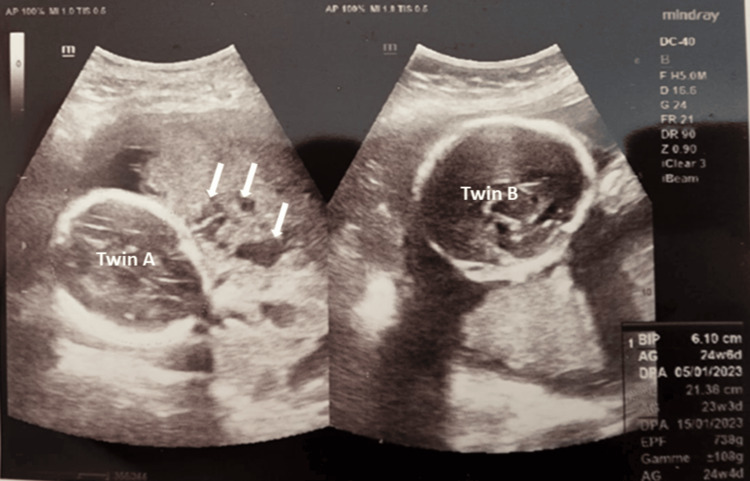

560 — Nhau cài răng lược: lacunae, cơ < 1 mm & dải T2 / PAS
Tags: pattern:bat-thuong-nhau vung:tu-cung score:PAS protocol:MRI-nhau
Mức chắc chắn (certainty): tổng hợp y văn (literature synthesis) — nhóm tự biên từ y văn mở, chưa gắn ca nguyên văn đơn lẻ.
1. Tổng quan — sẹo mổ cũ + nhau tiền đạo = gai nhau ăn qua cơ
- PAS (accreta/increta/percreta): gai nhau bám/xuyên cơ qua sẹo mổ cũ thiếu màng rụng — TẠI SAO mổ đẻ cũ + nhau tiền đạo là combo chết người: sẹo không có decidua cản, gai ăn thẳng vào cơ/bàng quang.
- Hồ máu (lacunae ≥ 4) xoáy tốc nhanh = tân mạch bệnh lý — TẠI SAO hình sâu bọ/phô mai Thụy Sĩ: máu mẹ ứ trong hồ xơ.
- MRI T2W (HASTE, KHÔNG gadolinium thai kỳ): dải tối > 6 mm (fibrin) + phình lồi (bulge) + mất viền cơ + tenting bàng quang.
2. Gamut chảy máu 3 tháng cuối (Gamut)
- Nhau tiền đạo + ≥ 4 lacunae + cơ < 1 mm: PAS — mổ chủ động 34–36 tuần + cắt tử cung + máu dự trữ.
- Percreta + tenting bàng quang: niệu + mạch máu + ICU (mất 3.500 mL + ngừng tim như ca dưới!).
- Nhau bong non + sau nhau máu + tim thai xấu: mổ cấp cứu (không phải PAS).
- Tiền đạo không lacunae: mổ đẻ thường quy (theo dõi).
3. Bảng so sánh phân biệt (ma trận đối chiếu)
| Thực thể (entity) | Hình ảnh điển hình | Chốt vào (rule-in) | Chốt loại (rule-out) | Gợi ý xác nhận |
|---|---|---|---|---|
| PAS accreta/increta | Tiền đạo + ≥ 4 lacunae + cơ < 1 mm + mất clear zone | Sẹo cũ + lacunae + bridging | Không sẹo + không hồ → tiền đạo đơn | Mổ 34–36 tuần + cắt tử cung |
| Percreta bàng quang | Bulge + dải T2 > 6 mm + tenting + mất viền cơ | Xuyên thanh mạc + bàng quang | Còn cơ → increta | Niệu + MTP 1:1:1 + ICU |
| Nhau bong non | Máu sau nhau + nhau dày + tim xấu, không lacunae | Máu cấp + tiền sản giật | Lacunae + sẹo → PAS | Mổ cấp cứu + chống DIC |
| Tiền đạo đơn thuần | Mép nhau < 2 cm lỗ trong, không hồ/mạch bắc | Không lacunae + cơ còn | Có hồ → PAS | Mổ đẻ + chuẩn bị thường |

Tiền đạo + lacunae bất thường; mổ phát hiện percreta xâm lấn bàng quang + mất 3.500 mL + ngừng tim (cứu được). Nguồn: Chahboun et al., Cureus 2026 Fig. 1, CC BY 4.0.4. Protocol PAS (28–32 tuần)
- Siêu âm Doppler (lacunae + cơ mm + bridging) + MRI T2W không thuốc khi sẹo cũ + tiền đạo; mổ chủ động đa chuyên khoa + MTP sẵn.
flowchart TD
A[Sẹo cũ + tiền đạo] --> B{≥4 lacunae + cơ<1mm?}
B -->|Có| C[PAS: mổ 34-36w + cắt TC]
B -->|Tenting BQ| D[Percreta: niệu + MTP]
B -->|Không| E[Tiền đạo đơn: mổ thường]
5. Cạm bẫy
- Siêu âm thường bỏ sót percreta (ca trên: siêu âm 3 tuần trước bình thường!) — nghi ngờ là MRI + chuẩn bị tối đa.
- Bóc nhau PAS = chảy máu tử vong — cắt tử cung nguyên khối, đừng bóc.
- Mổ PAS không máu/MTP/niệu — mất 3.500 mL + ngừng tim trong phút (ca trên!).
6. Tự lượng giá — Blind Quiz
Ca 1 — Song thai 25 tuần + 2 mổ cũ + chuyển dạ sớm. Đọc siêu âm.
- Hỏi: dấu gì ở Twin A? Percreta có thấy hết trên siêu âm không? Chuẩn bị gì?
Bấm để hiện đáp án
- Dấu hiệu (findings): nhau tiền đạo + hồ máu lacunae bất thường (mũi tên).
- Chẩn đoán (diagnosis): PAS (percreta xâm lấn bàng quang chỉ lộ khi mổ!) — cắt tử cung + bàng quang một phần + MTP 1:1:1 + ICU (mất 3.500 mL + ngừng tim, cứu được).
- Nguồn: Chahboun et al., Fig. 1, CC BY 4.0.
Ca 2 — Nhau tiền đạo + 6 lacunae + cơ 0,5 mm + bridging: tiền đạo đơn hay PAS? Mổ khi nào? (Bảng mục 3.)
Bấm để hiện đáp án
- PAS: mổ chủ động 34–36 tuần + cắt tử cung (đừng bóc nhau!).
Bài liên quan chéo
- 500 – Tổng quan Vú & SPK
- 550 – Thai sớm (thai vết mổ)
- 141 – Phúc mạc (dịch ổ bụng)
Không dùng để chẩn đoán độc lập khi chưa có người hướng dẫn.